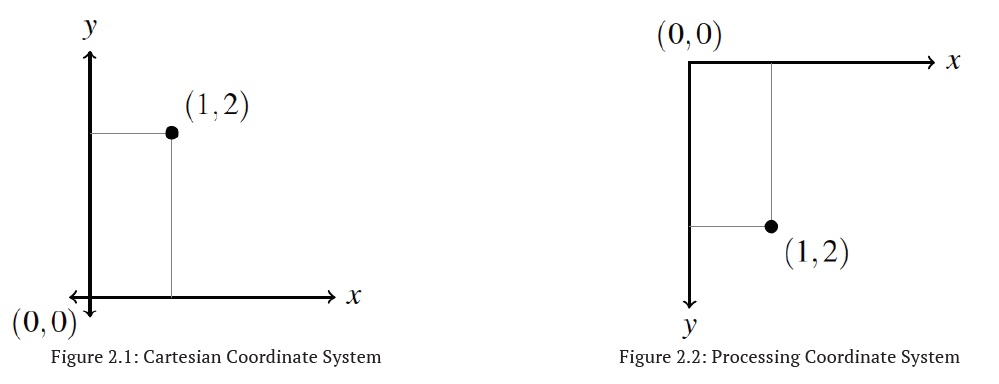
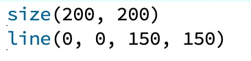

Processing places any lines or shapes that it draws on its canvas. The canvas uses an (x, y) coordinate system to specify locations. Recall from math class that at the center of the standard Cartesian coordinate system is the coordinate (0, 0) (the origin), that system has four quadrants (some of which use negative coordinates for x and y). The coordinate system used by Processing is a little different from the Cartesian one. In Processing, there are no quadrants, coordinates are never negative, and the coordinate (0, 0) is always the top left corner of the canvas. For locations on the canvas, increasing the x coordinate moves us to the right (which you’re used to in math class) and increasing the y coordinate moves us down (which is the opposite of what you’re used to in math class).

Pixels are the measurement of the canvas, and by default, the Processing canvas is 100x100 pixels in size. We can change the size of the canvas with the size command, like so:

Here, the two numbers in the size command specify the width and height (in that order) of the canvas in pixels. You’ll have to play around with Processing to get a sense of how big a pixel is, but it’s fairly small; you won’t see much of a difference between line(0, 0, 50, 50) and line(0, 0, 51, 51), for example.